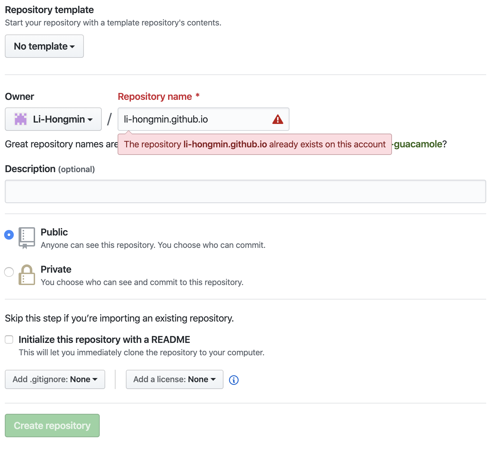

【学习笔记】用Hugo建站来写个人博客 Day2
把Hugo的网站部署到Github pages
上次我们已经做个一个网站在本地了，这次要把它部署到Github pages上。
本文主要参考hugo官方文档,需要github和本地两别操作。
部署前的准备
首先要确认三点：
- 确认本地有无git:
git --version
# git version 2.21.0 (Apple Git-122.2)
-
确认GitHub账号有无，可以免费申请一个。
-
已经有一个可以发布的Hugo网站
两种GitHub Pages
- User/Organization Pages (https://<USERNAME|ORGANIZATION>.github.io/)
- Project Pages (https://<USERNAME|ORGANIZATION>.github.io/
/)
部署设置
-
在github创建新的pages repository，如果是第一种就把<USERNAME|ORGANIZATION>换成你的用户名或者组织名，则输入如下图：
 我因为已经有同名的repository了，所以不可以创建。 -
再用同样的方法在github创建新的repository用来放hugo的文件，以下用
<YOUR-PROJECT>代替这个repository的名字 -
本地git clone，把
<YOUR-PROJECT-URL>换成网页url地址，在合适的目录下执行命令:git clone <YOUR-PROJECT-URL> && cd <YOUR-PROJECT> -
复制粘贴之前hugo的文件到clone的目录下面。用
hugo server来检查下正不正常，浏览器打开http://localhost:1313。 -
测试过后，用
rm -rf public/来移除所有public下的文件。 -
创建一个submodule：
git submodule add -b master git@github.com:<USERNAME>/<USERNAME>.github.io.git public
{kind=link}
这个submodule就会同步到<USERNAME>/<USERNAME>.github.io，而整个本地目录会同步到<YOUR-PROJECT>这里。
部署网站
生成网站并部署
hugo
cd public
git add .
git commit -m "Build website"
git push origin master
cd ..
这样应就可以了，浏览器打开<USERNAME>.github.io就可以看到了。
自动部署脚本
可以创建一个deploy.sh文件，好像这样.
然后记得chmod +x deploy.sh赋予权限。
只要运行 ./deploy.sh "Your optional commit message"就可以提交更改了。
总结
流水线作业，总是不够详细。
另外本网站的制作是根据academic模版，依照其官网而部署，也很简单。
Li Hongmin
PhD Student of Computer Science
My research interests include machine learning, precision medicine and programming.